2
▲1
▶
2
▲1
▶
【強すぎる】王様を守りながら敵陣を撃破しろ！【マイクラ】
ドズル社 · 352,638再生 · 公開 11/18
2
▲1
▶
ドズル社 · 352,638再生 · 公開 11/18
 4
初登場
▶
4
初登場
▶
Miko Ch. さくらみこ · 784,220再生 · 公開 11/19
 5
初登場
▶
5
初登場
▶
STARGLOW Official · 99,668再生 · 公開 11/18
 6
初登場
▶
6
初登場
▶
今日ポケch. · 152,944再生 · 公開 11/18
 8
▼2
▶
8
▼2
▶
めめんともり · 183,281再生 · 公開 11/18
 9
→
▶
9
→
▶
NiziU Official · 104,354再生 · 公開 11/18
 10
▲10
▶
10
▲10
▶
ハヤトの野望 · 184,403再生 · 公開 11/18
 12
▼4
▶
12
▼4
▶
ちろぴの · 202,003再生 · 公開 11/18
 14
初登場
▶
14
初登場
▶
Pekora Ch. 兎田ぺこら · 404,283再生 · 公開 11/19
 16
初登場
▶
16
初登場
▶
【V.I.P】 · 183,093再生 · 公開 11/18
 18
→
▶
18
→
▶
ピンポイント団 · 106,663再生 · 公開 11/18
 20
▼10
▶
20
▼10
▶
ウォーターチャレンジ · 201,796再生 · 公開 11/18
 22
初登場
▶
22
初登場
▶
城とドラゴン公式チャンネル · 82,528再生 · 公開 11/18
 24
▼12
▶
24
▼12
▶
カワノKawano · 300,203再生 · 公開 11/18
 26
▼10
▶
26
▼10
▶
KUNの50人クラフト · 162,599再生 · 公開 11/18
 28
初登場
▶
28
初登場
▶
令和ちゃんねる · 125,143再生 · 公開 11/18
 29
▼10
▶
29
▼10
▶
Stray Kids · 1,817,052再生 · 公開 11/17
 30
初登場
▶
30
初登場
▶
Kuzuha Channel · 520,249再生 · 公開 11/18
 31
初登場
▶
31
初登場
▶
Reichi · 25,006再生 · 公開 11/18
 32
初登場
▶
32
初登場
▶
ライキジョーンズ · 187,411再生 · 公開 11/19
 33
▲2
▶
33
▲2
▶
矢沢永吉 Eikichi Yazawa Channel · 70,897再生 · 公開 11/18
 34
初登場
▶
34
初登場
▶
ポケモンソルジャー【ポケソル】 · 110,947再生 · 公開 11/18
 35
▼14
▶
35
▼14
▶
LDH JAPAN · 723,587再生 · 公開 11/16
 36
初登場
▶
36
初登場
▶
TGG · 8,806,694再生 · 公開 11/19
 38
初登場
▶
38
初登場
▶
パパテラ【PAPATERA】 · 171,361再生 · 公開 11/19
 40
▼26
▶
40
▼26
▶
TAMAchan · 124,802再生 · 公開 11/18
 42
初登場
▶
42
初登場
▶
フブキCh。白上フブキ · 191,165再生 · 公開 11/18
 44
▼22
▶
44
▼22
▶
ポッキー · 303,319再生 · 公開 11/17
 46
初登場
▶
46
初登場
▶
よしなま · 77,801再生 · 公開 11/18
 48
▼18
▶
48
▼18
▶
マエスケ · 134,366再生 · 公開 11/18
 50
初登場
▶
50
初登場
▶
ジャック・オ・蘭たん · 52,857再生 · 公開 11/18
 1
→
▶
1
→
▶
Juice=Juice · 513,106再生 · 公開 11/17
 3
▲1
▶
3
▲1
▶
Travis Japan · 737,103再生 · 公開 11/18
 7
初登場
▶
7
初登場
▶
ゴールデンボンバー公式 · 91,276再生 · 公開 11/18
 11
▼4
▶
11
▼4
▶
XG · 1,500,893再生 · 公開 11/17
 13
初登場
▶
13
初登場
▶
TAGRIGHT Official · 27,680再生 · 公開 11/18
 15
▼4
▶
15
▼4
▶
初星学園 · 1,392,822再生 · 公開 11/16
 17
初登場
▶
17
初登場
▶
ヤングスキニー · 134,099再生 · 公開 11/18
 19
初登場
▶
19
初登場
▶
iiONDO · 67,321再生 · 公開 11/18
 21
初登場
▶
21
初登場
▶
BUDDiiS Channel · 51,428再生 · 公開 11/18
 23
▼10
▶
23
▼10
▶
HYBE LABELS · 14,249,157再生 · 公開 11/16
 25
初登場
▶
25
初登場
▶
sumika official · 57,067再生 · 公開 11/18
 27
▼10
▶
27
▼10
▶
Indigo La End - Topic · 28,438再生 · 公開 11/18
 37
初登場
▶
37
初登場
▶
MIKADO · 45,831再生 · 公開 11/18
 39
▼16
▶
39
▼16
▶
JO1 - Topic · 32,204再生 · 公開 11/18
 41
▲4
▶
41
▲4
▶
ツミキ / NOMELON NOLEMON · 30,819再生 · 公開 11/18
 43
▼14
▶
43
▼14
▶
amazarashi - Topic · 23,068再生 · 公開 11/18
 45
▼12
▶
45
▼12
▶
ふぉ〜ゆ〜ちゅ〜ぶ · 136,703再生 · 公開 11/17
 47
▼16
▶
47
▼16
▶
Tsukuyomi - Topic · 48,947再生 · 公開 11/17
 49
▼12
▶
49
▼12
▶
ONE N' ONLY TV · 279,475再生 · 公開 11/16
中日新聞Web · 17 Nov · @uclaspiritsquad ♥617
Yahoo!ニュース · 18 Nov · @thebraleyfamily ♥899,522
TBS NEWS DIG · 18 Nov
ニコニコニュース · 17 Nov · @ireba_and_me ♥13,558
ねとらぼ · 18 Nov · @kays_impressions ♥6,199
ねとらぼ · 18 Nov · @obomi.kyoto ♥692
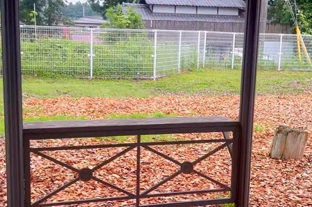
63万回 NEWExcite エキサイト · 18 Nov
千葉テレビ放送 · 18 Nov
Excite エキサイト · 18 Nov
 18万回
18万回
Excite エキサイト · 17 Nov

八王子ジャーニー · 17 Nov · @802dabe ♥2,265
沖縄タイムス社 · 18 Nov
Newscast.jp · 17 Nov
games.gg · 17 Nov
Infoseek · 18 Nov
フクリパ · 18 Nov
Yahoo!ニュース · 18 Nov
BuzzFeed · 18 Nov
ハフポスト · 18 Nov
Excite エキサイト · 18 Nov
LEE · 18 Nov
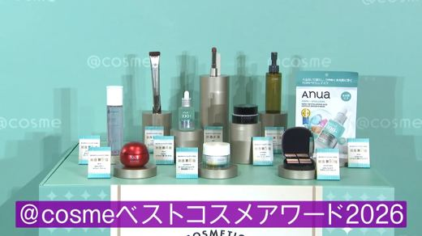
NEWau Webポータル · 18 Nov
au Webポータル · 18 Nov
トレタメ · 18 Nov · @ami._.nakai ♥81,827
オトナンサー · 18 Nov
THE FIRST TIMES · 18 Nov · @calvinklein ♥311,955
ニコニコニュース · 18 Nov
 NEW
NEW
Excite エキサイト · 18 Nov
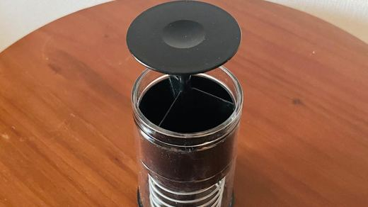
Yahoo!ニュース · 17 Nov
ヨムーノ · 17 Nov
ねとらぼ · 17 Nov
 NEW
NEW
ｄメニューニュース · 17 Nov
ニコニコニュース · 17 Nov
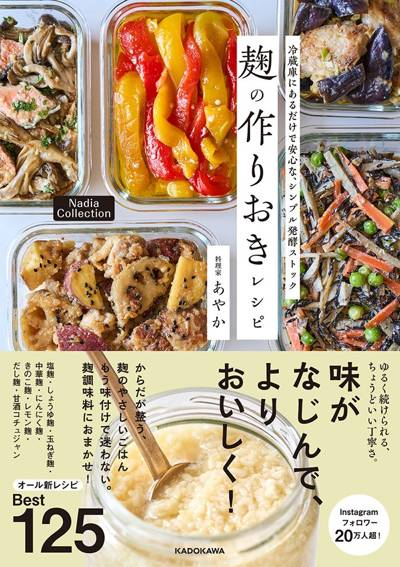
11/18 19:30 🗼 東京Nadia株式会社のプレスリリース 「料理はがんばらなくていい」試行錯誤の末にたどり着いた、あやか流「麹×作りおき」の魅力 Na
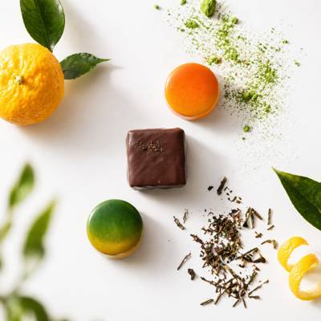
11/18 18:18 🗼 東京株式会社 アールのプレスリリース ～ベルギーで日本人初の「最優秀ショコラティエ」に選出されたシェフが手がける、香りと余韻にこだわ
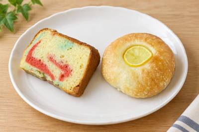
11/18 15:00 🗼 東京学校法人田中育英会のプレスリリース アイデアを「形」にし「価値」を届けるビジネス体験 【テクノス×コボコボ コラボ商品 「わたあ
カンフェティ（ロングランプランニング株式会社）のプレスリリース 『ルーマニアのクリスマス 【城西大学公演】』が2026年12月2
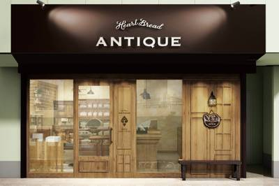
11/18 10:20 🗼 東京株式会社オールハーツ・カンパニーのプレスリリース ～駅近の好立地に、出店コストと運営人員を抑えたコンパクトなベーカリー店舗モデル
株式会社黒船のプレスリリース 黒船といかりスーパーマーケットのコラボレーション第二弾「カステララスキュ」を、いかりスーパーマーケ
株式会社ロッテのプレスリリース 株式会社ロッテ（東京都新宿区、代表取締役社長執行役員：中島英樹、以下ロッテ）は、2026年11月
株式会社グレープストーンのプレスリリース 2026年11月24日(火)～12月13日(日)期間限定出店 株式会社グレープストーン
大王製紙株式会社のプレスリリース カフェで愛犬と過ごすひとときを、もっと豊かに 大王製紙株式会社が展開するペット用品ブランド「エ
カフェ・カンパニー株式会社のプレスリリース カフェで愛犬と過ごすひとときを、もっと豊かに 日本国内外において「コミュニティの創造
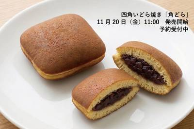
11/18 09:00 🗼 東京株式会社トラッドグリーンのプレスリリース 従来の生地とは異なるふわふわ系で、見た目も味もまさに型破り！ 前回2026年10月にど
株式会社SAKIGAKEホールディングスのプレスリリース 11月21日（土）より全国19店舗で販売開始！スタンプ5個で「たっぷり
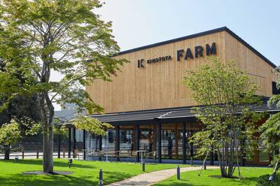
11/18 17:30 🚄 宮崎きのとやのプレスリリース 株式会社きのとや（本社：北海道札幌市 代表取締役社長 中田英史）は、きのとやファーム店創業7周年を記念
株式会社Cake.jpのプレスリリース ケーキ・スイーツ専門通販サイト「Cake.jp（ケーキジェーピー）」を運営する株式会社C
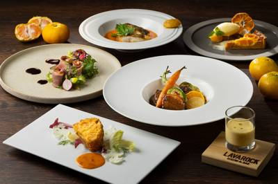
11/18 15:00 🚄 大阪森トラスト・ホテルズ＆リゾーツ株式会社のプレスリリース 「Kansai Excursion – Wakayama A
モランボン株式会社のプレスリリース モランボン株式会社(本社：東京都府中市 代表取締役社長：全 峰 碩）は、水産売場向け商品と
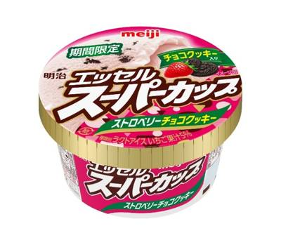
11/18 14:00 🚄 宮崎株式会社 明治のプレスリリース 株式会社 明治（代表取締役社長：八尾 文二郎）は、カップアイスの定番としてご好評いただいている
株式会社ミホミのプレスリリース 静岡のお土産として40年以上愛される「こっこ」等を製造・販売する株式会社ミホミ（所在地:静岡県静
株式会社 てっぺんのプレスリリース 昼はこだわりの八重山そば、夜は少人数で気軽にお酒を楽しめる「そば酒場」。鉄板焼き、から揚げ、
株式会社福岡ソノリクのプレスリリース 淡路島で40年以上玉ねぎを育てる農家が、がごめ昆布とオートミールを合わせた一杯。お湯を注い
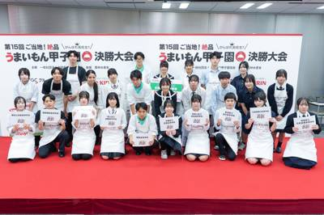
11/18 12:14 🚄 宮崎株式会社日本アクセスのプレスリリース 全国91校281チームの中から勝ち抜いた10チームが決勝の舞台に集結。全国の高校生がご当地
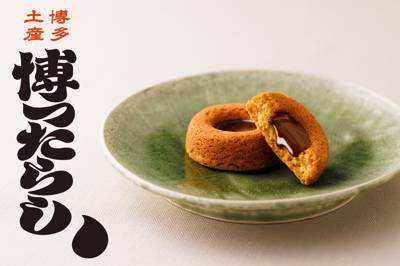
11/18 12:10 🚄 博多株式会社九十九島グループのプレスリリース ほろほろのガレット生地に注いだみたらしキャラメル。和洋感じる新しい味わいはいかがでしょ
イオン株式会社のプレスリリース 武蔵野釜揚げうどんも新登場。『3種きのこと豚肉のつけ汁うどん』もリニューアル！ イオングループの
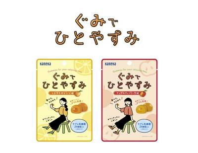
11/18 12:00 🚄 宮崎カネカ食品株式会社のプレスリリース ～休憩・気分転換・一息つきたいときに寄り添うグミ～ 2026年11月18日 報道関係者各位
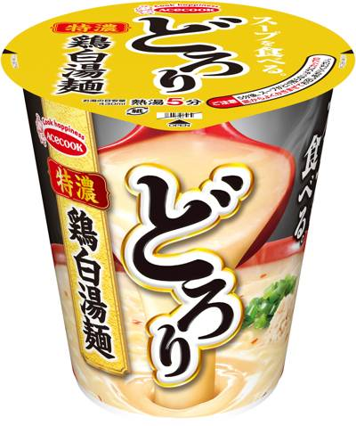
11/18 12:00 🚄 宮崎エースコック株式会社のプレスリリース 鶏コラーゲン入り調味油で仕上げる特濃鶏白湯麺が登場！どろりと旨いスープも残さず食べ尽くす、
株式会社PLANTのプレスリリース 株式会社ＰＬＡＮＴ（本社：福井県坂井市 代表取締役社長：三ッ田泰二）は、プライベートブランド
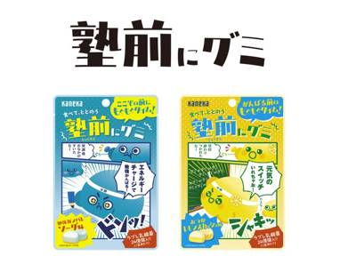
11/18 12:00 🚄 宮崎カネカ食品株式会社のプレスリリース ～学生の塾や習い事前の「小腹満たし」にちょうどいいグミ～ 2026年11月18日 報道関係者
日清食品株式会社のプレスリリース 体にかけるとふっくらと膨らみ、まるで「はぐれメタル」がそばにいるかのよう！ 日清食品株式会社
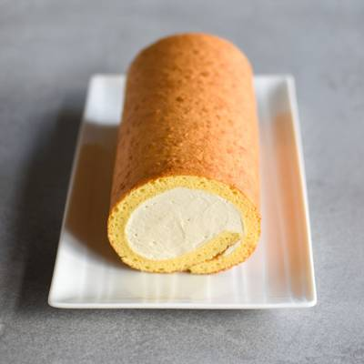
11/18 11:32 🚄 長野コンコント株式会社のプレスリリース 脱脂粉乳の高水準の在庫が懸念される中、独自の乳糀発酵素材「KOKUMIミルクペースト®」を活
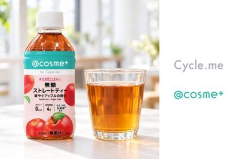
11/18 11:00 🚄 宮崎株式会社ドットミーのプレスリリース ～無糖・カロリーゼロ・食物繊維＆うるつや乳酸菌®配合で、毎日の腸活サポートを叶えるインナーケ
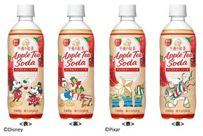
11/18 11:00 🚄 宮崎キリンホールディングス株式会社のプレスリリース キリンビバレッジ株式会社（社長 井上一弘）は、紅茶飲料売上本数No.1ブランド
ネスレ日本株式会社のプレスリリース ミルクチョコレートとバナナ風味の生地を一度に楽しめる新製法を採用し、見た目も味わいも、さらに
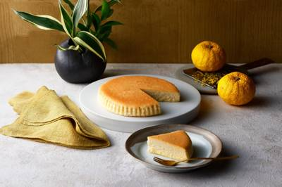
11/18 11:00 🚄 高知株式会社庫やのプレスリリース 全国のチーズガーデンおよびオンラインショップにて コロワイドグループのチーズガーデン（株式会社庫
味の素AGF株式会社のプレスリリース 商品選びでは「健康」と「おいしさ」がほぼ同率、新商品を試すきっかけは「おためし体験」が約6
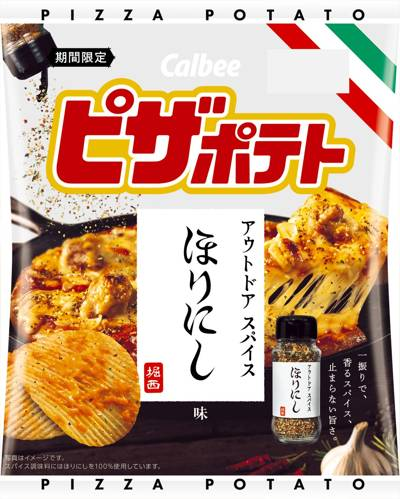
11/18 11:00 🚄 宮崎カルビー株式会社のプレスリリース ２０２6年11月30日（月）から全国のコンビニエンスストアで期間限定発売 カルビー株式会社（本
株式会社フレッシュネスのプレスリリース 2026年11月25日（水）～事前予約受付開始 / 12月26日（土）～店頭販売開始
はごろもフーズ株式会社のプレスリリース ～塩に頼らない旨みとモチモチ食感。自分流に味と塩分をアレンジできる革新的ラーメン～ はご
株式会社グレープストーンのプレスリリース 2026年12月2日(水)より「東京おかしランド」にて先行販売開始！ 株式会社グレープ
オイシックス株式会社のプレスリリース 〜 面倒な仕込みは時短で解決！ ひとつの鍋を家族で囲み、味わいの変化を楽しむ豊かな時間を提
株式会社ゴンチャ ジャパンのプレスリリース 株式会社ゴンチャ ジャパン（本社：東京都港区、代表取締役社長：角田淳、以下ゴンチャ
株式会社アイルのプレスリリース 東京限定の「ザ カンパネラ 東京」が神戸に初登場。大人気の看板商品「ザ カンパネラ ショコラ」や
はごろもフーズ株式会社のプレスリリース はごろもフーズ株式会社（本社：静岡県静岡市 社長：後藤佐恵子）は、全国でミールキット宅配
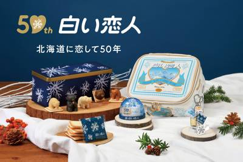
11/18 11:00 🚄 北海道石屋製菓株式会社のプレスリリース 全5種類のコラボフィギュア入り記念缶に加え、本物そっくりなコスメポーチや限定メニューまでアニバ
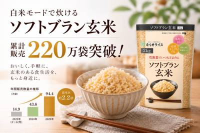
11/18 10:30 🚄 宮崎株式会社むらせのプレスリリース おにぎり換算で約1億3,000万個分！購入者の90％が「今後も買いたい」と回答 株式会社むらせ（
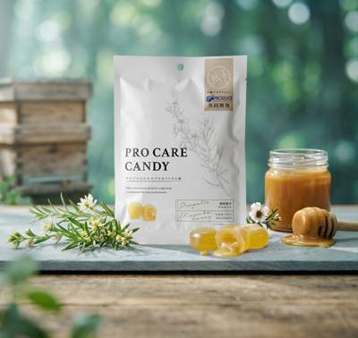
11/18 10:21 🚄 宮崎株式会社秋田屋本店のプレスリリース 飴の形を保てる限界量まで配合！2粒でプロポリス1日分を摂取できる“原液級のど飴” 株式会社秋
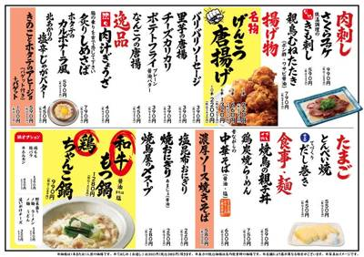
11/18 10:10 🚄 宮崎株式会社テンポスホールディングスのプレスリリース 「バリバリソーセージ」「ホタテのカルボナーラ風」など、気になる新商品が続々！ち
株式会社物語コーポレーションのプレスリリース 株式会社物語コーポレーション(本社:愛知県豊橋市/代表取締役社長:加藤 央之)が全
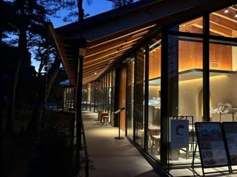
11/18 10:00 🚄 宮城Tregion株式会社のプレスリリース 竹駒神社境内の「竹駒の杜 CAFÉ 一粒万倍」が、水〜土曜日・1組4名以上の予約で利用で
株式会社アントワークスのプレスリリース すた丼屋ならではのボリュームと刺激的な辛さを楽しめる全4商品が登場！ 丼チェーン「伝説の
ハチ食品株式会社のプレスリリース 日本最初の天神さま「防府天満宮」で商品の祈祷を実施 ハチ食品株式会社（大阪府大阪市、代表取締役
株式会社ニイタカのプレスリリース ～今回は「てんしとあくまなしっぽず」デザイン♪ 2026年11月18日(水)に『すみっコぐらし
カンロ株式会社のプレスリリース ～昨シーズン累計約5,000個が完売！雪遊びのような特別な体験を～ カンロ飴やピュレグミなどで
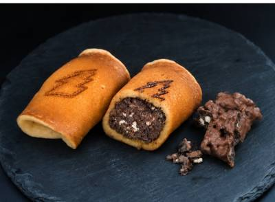
11/18 10:00 🚄 愛知株式会社お亀堂のプレスリリース 累計販売数500万個突破。豊橋にゆかりのあるお亀堂と有楽製菓が生んだ「もちもち×ザクザク」のコラ
株式会社ほっかほっか亭総本部のプレスリリース 店内のせいろで蒸しあげた、こだわりの“中華”商品ご購入でオリジナルグッズをプレゼン
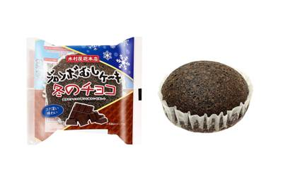
11/18 10:00 🚄 宮崎株式会社木村屋總本店のプレスリリース ジャンボむしケーキ「はちみつ」「いちごミルク」も同時発売 株式会社木村屋總本店（本社所在地
東京書店株式会社のプレスリリース 「お菓子を作ってみたい！」のデビューにおすすめのレシピ本が完成。サンエックスのかわいいキャラク
1772年(安永元年)創業、250余年の歴史を持つみりんメーカー九重味淋株式会社(代表取締役：石川 総彦、所在地：愛知県碧南市、
株式会社カネカサンスパイスのプレスリリース しっかりとした生姜感とスパイスの香りを、毎日の一杯でもっと手軽に 株式会社カネカサン
株式会社味とサイエンスのプレスリリース お選びくださった皆さまに、心より御礼申し上げます。 1835年創業・スリランカ最古の紅
亜細亜TokyoWorld株式会社のプレスリリース 亜細亜TokyoWorld株式会社が運営するジビエ居酒屋「米とサーカス」は、
株式会社ホットパレットのプレスリリース トマトソースとカルビの温かさが最後まで心も身体も温める一品 株式会社ホットパレット（本
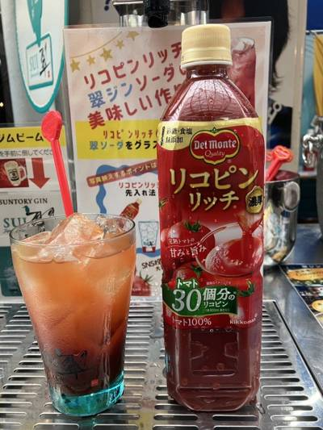
11/18 14:51 🚄 宮崎株式会社岩田産業グループホールディングスのプレスリリース ～3社で生み出した新感覚トマトジンソーダ。採用後のクロストークから見え
鳥取県のプレスリリース 11月23日（月・祝）は鳥取県の5つの酒蔵が新橋に集結する「地の酒・地の味まいもん祭り」も同時開催。 カ
株式会社B級グルメ研究所のプレスリリース 11月22日は「いい夫婦の日」。『肉と炒め野菜 ステーキロッヂ 秋葉原電気街口店』では
ワタミ株式会社のプレスリリース 冬ならではのおいしさをお届け！旬を迎える徳島県産すだちぶりや名古屋コーチン、九条ねぎ、ワタミファ
 11/18 16:30
🚄 宮崎
11/18 16:30
🚄 宮崎
株式会社ぐるなびのプレスリリース 株式会社ぐるなび（本社：東京都千代田区、代表取締役社長：杉原章郎）は、アイリスオーヤマ株式会社
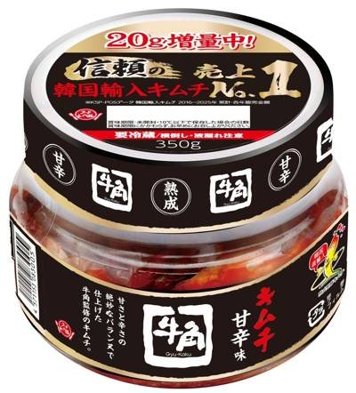
11/18 16:00 🚄 宮崎当社の連結子会社である株式会社フードレーベル(本社：埼玉県所沢市、代表取締役社長 鈴木 五生)は、人気焼肉店牛角監修「牛角韓国直
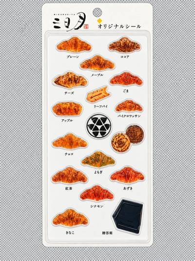
11/18 14:21 🚄 宮崎有限会社a.crescentのプレスリリース 天然酵母クロワッサン専門店「三日月屋」は、2026年11月21日（土）から11月2
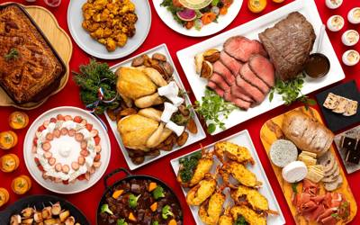
11/18 14:00 🚄 札幌株式会社グランビスタ ホテル＆リゾートのプレスリリース ごちそうで祝う、一年に一度の聖夜 URL：https://grand19
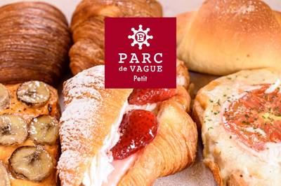
11/18 13:00 🚄 さいたま株式会社アクアのプレスリリース 江別製粉と共同開発した北海道産小麦100％のオリジナルブレンド粉を使用。 焼きたてパンと話題のボ
株式会社モンテローザのプレスリリース リニューアルオープンを記念して、11月19日（木）・20日（金）の2日間限定で、店内飲食の
株式会社GENDA GiGO Entertainmentのプレスリリース 開催期間：2026年11月28日(土)～12月27日(
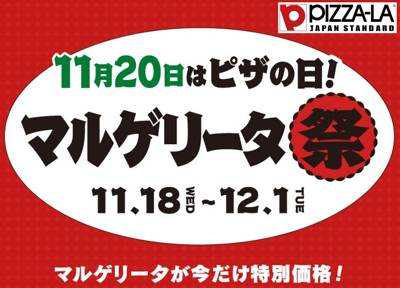
11/18 11:00 🚄 宮崎株式会社フォーシーズのプレスリリース 2026年11月18日（水）～12月1日（火） ※ピザーラ公式サイト会員限定 株式会社フ
株式会社クリエイト・レストランツ・ホールディングスのプレスリリース ～ 特製の薬膳スープに、彩り豊かな野菜を好きなだけ！毎日でも
株式会社レインズインターナショナルのプレスリリース “黒毛和牛専用”の薬味も新開発！「黒辛味たまご」と「柚子胡椒おろし」でおいし
株式会社アトムのプレスリリース ステーキ宮にて2026年11月20日（金）より第1弾スタート コロワイドグループの株式会社アトム
イージーリンク株式会社のプレスリリース グルテンフリーのご褒美スイーツや、冷凍ストックできるお惣菜、卵不使用パンの詰め合わせも！
とろり天使のわらびもち株式会社のプレスリリース 全国にとろり天使のわらびもちを展開する「とろり天使のわらびもち株式会社」は、20
楽彩株式会社のプレスリリース RAKUSAI 11月18日（水）予約販売スタート d130004-164-9f1d3303eb1
雪印メグミルク株式会社のプレスリリース Xフォロー＆リポストや「雪印コーヒー」公式ブラウザゲームで 雪印メグミルク株式会社（本
株式会社トライアルホールディングスのプレスリリース 生活必需品の食品・日用品をいつものEDLP以上のお買い得価格で提供！「黒（ク
森永製菓株式会社のプレスリリース 森永製菓株式会社（東京都港区芝浦、代表取締役社長 COO・森 信也）は、考えるためのエネルギー
THE WHY HOW DO COMPANY株式会社のプレスリリース 本音をつまみに、今夜は乾杯。――“本音を語れる場所”居酒屋
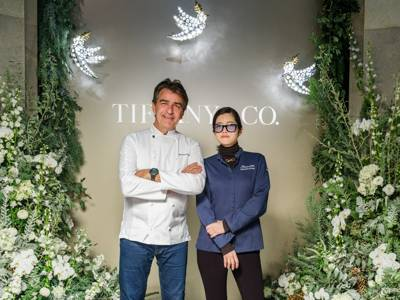
11/18 15:10 🗼 東京ティファニー・アンド・カンパニー・ジャパン・インクのプレスリリース ハウス アンバサダー 冨永愛も来場 ティファニーは、2026
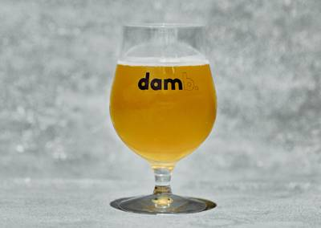
11/18 14:00 🗼 東京株式会社トランジットホールディングスのプレスリリース 〜千葉鴨川のクロモジとマダガスカルのバニラが香る、森を再生するクラフトビー
東急ホテルズ＆リゾーツ株式会社のプレスリリース 2026年11月30日（月）オープン ～高層階フロアは「プレミアフロア」にグレー
株式会社SHIKI JAPANのプレスリリース “推し”への共感を、来店・食体験・地域への応援につなぐ。ファンマーケティングに特
際コーポレーション株式会社のプレスリリース 紅虎餃子房・万豚記とのコラボ開催 際コーポレーション株式会社（本社：東京都目黒区、代
マリオット・インターナショナルのプレスリリース シンガポール「Madame Fan（マダム ファン）」パク・チーイットと「香桃」
ハイアット リージェンシー 京都のプレスリリース ハイアット リージェンシー 京都（京都市東山区三十三間堂廻り644番地2、総支
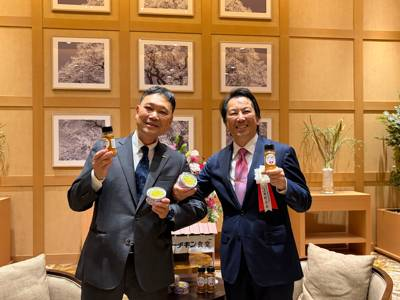
11/18 11:00 🚄 宮崎ヨシケイ開発株式会社のプレスリリース つくる人から笑顔に。をテーマに全国でミールキット宅配サービスを提供するヨシケイグループ（
チムニー株式会社のプレスリリース 宮崎県産「黒瀬ぶり」や「あんこう」など、冬の味覚を堪能。1人前から注文できる全5種の個性豊かな
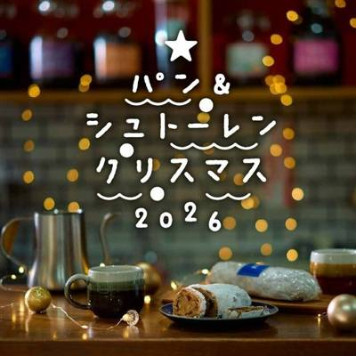
11/18 09:30 🚄 梅田株式会社阪急阪神百貨店のプレスリリース 約60種類のシュトーレンが大集結！会場で焼き上げるこだわりベーカリーのパンにもご注目くだ
株式会社インターリンクのプレスリリース 場所・食・旅など、幅広い分野で活用できる3ドメインを各4,180円（税込）で提供 ドメイ
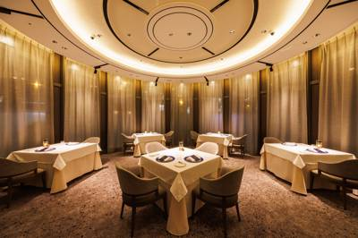
11/18 20:54 🗼 東京日本ホテル株式会社のプレスリリース 2027年1月より「開業1周年記念コース」提供 ホテルメトロポリタン エドモント（所在地／東
株式会社エー・ピーホールディングスのプレスリリース 2026年11月18日(水)より冬のおすすめ開始 株式会社エー・ピーホールデ
株式会社サンクゼールのプレスリリース 地域農産物の活用と日本食文化の海外発信が評価、農林水産大臣ら出席のもと贈呈式を開催 株式
ホリイフードサービス株式会社のプレスリリース 年間店舗営業利益1億円規模を見込む高収益モデルを確立へ。新宿で培った運営ノウハウを
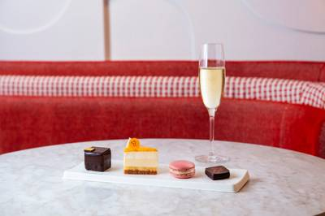
11/18 15:45 🗼 丸の内PH PARIS JAPON 株式会社のプレスリリース ピエール・エルメ・パリ「プティ グルマン」 ピエール・エルメ・パリは、4
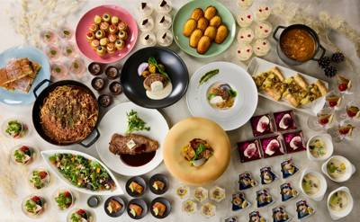
11/18 15:00 🗼 東京三菱地所ホテルズ＆リゾーツ株式会社のプレスリリース 冬のごちそうランチを、お好みの味わいとともに ザ ロイヤルパークホテル ア
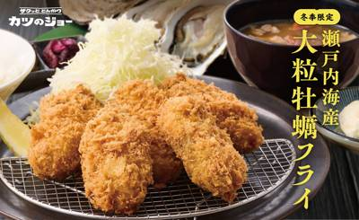
11/18 14:00 🗼 東京株式会社ユニシアホールディングスのプレスリリース ～ご自宅でも楽しめるテイクアウト・デリバリーも受付中～ 株式会社ユニシアホール
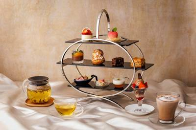
11/18 14:00 🗼 東京日本ホテル株式会社のプレスリリース ダイニング・カフェ「ベルテンポ」 濃厚ショコラと楽しむ冬のティータイム ホテルメトロポリタン
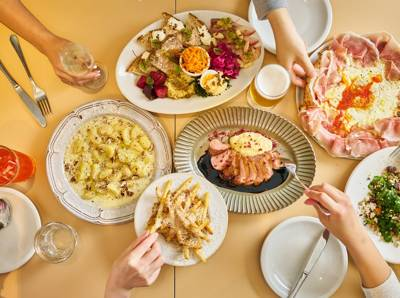
11/18 13:00 🗼 東京株式会社 GREENINGのプレスリリース ご友人との集まりから職場での会食まで。シーンに合わせて選べる2種類の大皿コースをご用
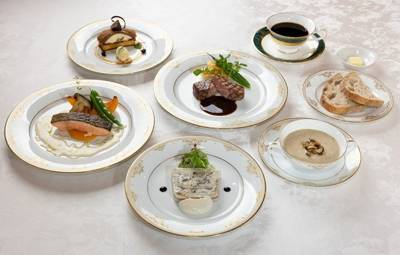
11/18 13:00 🗼 東京明治記念館のプレスリリース 「ラウンジkinkei」/「ダイニングkinkei」では、10月25日(日)から12月13日(日)ま
株式会社そらのプレスリリース 株式会社そらが運営するフルーツパフェ専門店「THE NEW NORMAL 恵比寿」は、2026年1
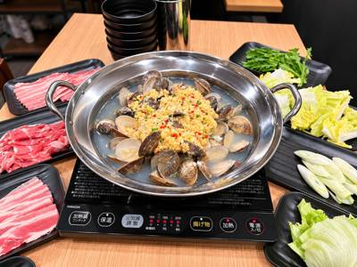
11/18 12:00 🗼 東京株式会社Like a Bossのプレスリリース にんにく×ハマグリの豪快な鍋料理。そして、濃厚な貝出汁で肉・野菜、〆まで。新宿・
株式会社KIDS HOLDINGSのプレスリリース 日本食品・加工品・調味料などを中東・アフリカ市場へPR。2027年3月15日
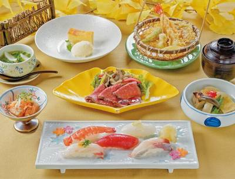
11/18 12:00 🗼 東京明治記念館のプレスリリース 鮨・天麩羅・鉄板焼「羽衣」では、令和8年11月9日(月)より12月4日(金)までの期間中、平日ランチ
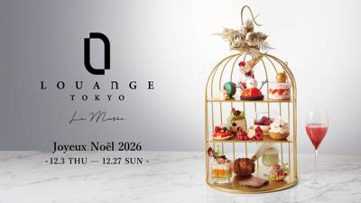
11/18 11:50 🗼 東京株式会社スイーツプラスのプレスリリース スノーマンやオーナメントのスイーツ8種と、A5黒毛和牛"常陸牛"のロ
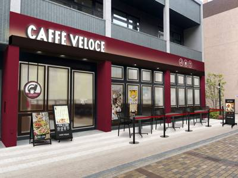
11/18 11:00 🗼 神奈川C-United株式会社のプレスリリース コロワイドグループのC-United株式会社（本社：東京都港区、代表取締役社長：友成
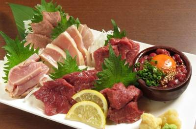
11/18 11:00 🗼 松戸株式会社大幸のプレスリリース ～ 「人・時・酒・食・地」五つのご縁をつなぐ。松戸に誕生した“大人の居場所”で、年末年始のひととき
株式会社ウィッチクラフトのプレスリリース ホーカスポーカス 表参道で2026年11月19日から12月25日までの限定販売 のびる
株式会社WDI JAPANのプレスリリース 名店の味を気軽に楽しむ「バーガーマンス」に、六本木店だけの2品が登場 販売期間：20
株式会社ニュー・オータニのプレスリリース あまおうとメロンの食べ比べに、ローストビーフ、海鮮丼まで！心躍るいちご時間はいかが。
株式会社ベストホスピタリティーネットワークのプレスリリース 可憐なローズの世界観で苺とショコラが出逢う、甘くロマンティックな冬の
栄盛株式会社のプレスリリース ～銀座の個室で愉しむ贅沢。『VIVANT』にも登場した本格北京ダックと高級中華が彩る、2時間飲み放
株式会社モーリのプレスリリース 12月24日・25日の2日間限定でお渡し。大切な人と過ごすクリスマスに、華やかなケーキを。 株式
株式会社ベイシアのプレスリリース ～ 鮮魚専門店「魚耕」や本格ベーカリーを導入、毎日の食をより便利に ～ 株式会社ベイシア（本
Stoked Creations合同会社のプレスリリース 苺づくしのロールケーキ、9種類の焼き菓子を詰めたクッキー缶、湘南ゴール
 11/19 08:50
🚄 宮崎
11/19 08:50
🚄 宮崎
ネッスー株式会社のプレスリリース 都城市、生産者、食肉加工販売事業者、こども食堂関係者が出演し、取り組みの趣旨や想いを伝えます。
株式会社スタンドケイのプレスリリース 焼きたての牡蠣。ジャズバンドの生演奏を聴きながら、仕事帰りに仲間と囲む、冬だけのごちそう時
SERENDIPITY株式会社のプレスリリース 事前予約は5分で300件超え!!たった一人の職人が焼き上げる入手困難のガトーショ
SERENDIPITY株式会社のプレスリリース 一人の職人が焼き上げる、1日で焼き上がるのはわずか18本のガトーショコラ。想定を
株式会社ファーマフーズのプレスリリース 約25年にわたる科学的根拠、品質、安全性、革新性およびプレシジョンヘルスへの貢献が評価
鳥取県のプレスリリース ～令和８年度「食パラダイス鳥取県」特産品コンクール表彰式～ 鳥取県は、県産農林水産物を活用した新たな加工
株式会社TOYO EVERYDAY HOLDINGSのプレスリリース すでに多くのお客様がプレイ！野菜や食品を獲って楽しく生活を
 11/18 17:20
🚄 宮崎
11/18 17:20
🚄 宮崎
琉球ソフトクリーム株式会社のプレスリリース 「琉球ソフトクリーム」ブランドは継続。沖縄の魅力を結ぶマルチブランド企業へ 琉球ソフ
株式会社フジオフードグループ本社のプレスリリース 沖縄県内のグループ店舗「サムズバイザシー泡瀬店」の受賞実績も紹介 株式会社フジ
猿田彦珈琲株式会社のプレスリリース 猿田彦珈琲株式会社（本社：渋谷区／代表取締役：大塚朝之）が運営するスペシャルティコーヒー専門
株式会社トランジットホールディングスのプレスリリース 岩手・八幡平の生産者たちとの出会いを一皿に。土地の風土とつくり手の想いをフ
gooddaysホールディングス株式会社のプレスリリース こだわりの1杯とともに、観光・テレワーク・滞在がひとつに繋がる「空間の
株式会社コメダのプレスリリース 株式会社コメダ [本社：愛知県 代表取締役社長：甘利 祐一、グループ店舗数：1,174店舗(20
マルキン食品株式会社のプレスリリース 「九州本仕込み」がアメリカ大豆部門でダブル受賞、「九州極だし」が小粒・極小粒部門で受賞 ～
いきや食品株式会社のプレスリリース ふるさと納税で2年連続全国1位の人気商品を、地元の子どもたちへ代表が小学校を訪問し、児童と給
ニッカホーム株式会社のプレスリリース 地元食材「瀬戸山麓牛」「瀬戸豚」を電気グリルで囲む全78席！15名から貸切相談可。オープン
アイコニア・ホスピタリティ株式会社のプレスリリース 亀の井ホテル 知多美浜（所在地：愛知県知多郡美浜町、以下当ホテル）では、知
京阪ホテルズ＆リゾーツ株式会社のプレスリリース ～ライブキッチンには目の前で仕上げる「握り寿司」に加え「天ぷら」もラインアップ～
学校法人三幸学園のプレスリリース ～食品ロスに配慮した「タコスロール」で2年連続の県大会出場と受賞を達成～ 学校法人三幸学園（以
株式会社 FELLOWSのプレスリリース 「鮪屋なのに、主役は肉!?」茨城・ひたちなかの『鮪屋 心』がスタミナ定食に本気。マグロ
株式会社ベイクルーズのプレスリリース 12月24日(木)・25日(金)限定のクリスマスランチと、12月24日(木)限定のスペシャ
カンロ株式会社のプレスリリース ～連日行列となった大人気のポップアップストアが再び登場！～ カンロ飴やピュレグミなどでおなじみ
キッコーマン株式会社のプレスリリース ～ポムポムプリンの日常を描いた2コマまんが風のデザイン～ キッコーマンソイフーズ株式会社は
株式会社ポジティブドリームパーソンズのプレスリリース 2026年12月1日（火）～2月28日（日）の期間限定で販売 全国でホス
シェラトン・グランデ・トーキョーベイ・ホテルのプレスリリース ～クリスマスの世界観を映した、個性あふれるスイーツが登場～ シェ
株式会社オーファスのプレスリリース 年末年始はご家庭でも小川の味を。早期予約特典やお歳暮ギフトもご用意！ 株式会社オーファス(東
株式会社ミホミのプレスリリース こっこ広報室長として取引先・マスコミとの名刺交換やお客様への「こっこ」のPRに勤しむ 静岡のお土
株式会社グリーンハウスフーズのプレスリリース 冬の元気は、おいしいいたわりから。 株式会社グリーンハウスフーズの展開する「おかゆ
フークル株式会社のプレスリリース オリジナルパンケーキハウスから、心ときめくクリスマス限定メニュー3品が登場！ フークル株式会社
株式会社movのプレスリリース いま訪日客に人気の飲食店TOP30を発表！ インバウンドビジネスメディア「訪日ラボ」及び 店舗向
アイコニア・ホスピタリティ株式会社のプレスリリース 亀の井ホテル 草津リゾート（所在地：群馬県吾妻郡草津町、支配人：多田広、以
株式会社長寿荘のプレスリリース 開催期間：2026年12月30日(水)～2027年1月3日(日) 『ホテルテラスザガーデン水戸』
株式会社ツカダ・グローバルホールディングのプレスリリース ■開催期間：2026年12月17日（木）・24日（木）・25日（金）限
株式会社ニュー・オータニのプレスリリース ホテルニューオータニ大阪に、スイーツ研究所「いちごLabo.」が誕生！ パティシエの遊
株式会社弁才天のプレスリリース 弁才天は2026年11月16日から、人気のフルーツ大福や砂利餅、染みチョコなどを贅沢に詰め合わせ
株式会社 牛かつもと村のプレスリリース ～難波駅から徒歩4分。アメリカ村の街歩きや心斎橋・道頓堀観光の合間に～ お客様ご自身が石
パルシステム生活協同組合連合会のプレスリリース 手製うちわ・横断幕も登場 パルシステムグループの物流を担う株式会社パルシステム・
株式会社東京玉子本舗のプレスリリース 株式会社東京玉子本舗「N.Y.C.SAND」（代表取締役社長：金野 崇、本社：東京都中央区
株式会社Goalsのプレスリリース ゴンチャの圧倒的成長に学ぶ！人手不足を解消する「ホスピタリティ×テクノロジー」の舞台裏を3社
株式会社SAKIGAKEホールディングスのプレスリリース 今年は選べる2種の味噌！「北海道濃厚味噌らぁめん」と「背脂生姜味噌らぁ
株式会社OMOIのプレスリリース ～ふわふわな生地で餡の良さをより感じられる味わいへ～ プレスリリース
 11/18 11:00
🚄 宮崎
11/18 11:00
🚄 宮崎
株式会社HiOLIのプレスリリース ～株式会社たこ満との共創により、11月25日（水）阪神梅田本店の催事からスタート～ 株式会
株式会社ピエトロのプレスリリース イカスミを使った特別な一皿！11月20日（金）から10日間限定で提供開始 株式会社ピエトロ(本
株式会社BAKEのプレスリリース 「焼きたてタルト アップルシナモンチーズ」も同日より登場 株式会社 BAKE（本社：東京都港
ANAクラウンプラザホテル秋田のプレスリリース ～とろけるラクレットに、全7種の“追いがけ”！チーズ食べ放題も楽しめる25日間～
ワタミ株式会社のプレスリリース WATAMI FAST CASUAL MANAGEMENT株式会社（本社：東京都大田区）が展開
株式会社 三越伊勢丹ホールディングスのプレスリリース 老舗に受け継がれる味わいから、新しい感性で生まれるスイーツまで。京の食文化
株式会社フレッシュネスのプレスリリース 事前予約で各ボックス200円OFF！クリスマス当日も予約なしで購入可能 コロワイドグル
GENSEN HOLDINGS株式会社のプレスリリース 全国に75のホテル・宿・テーマパークなどを展開するGENSEN HOL
株式会社 福寿園のプレスリリース 宇治抹茶の奥深い味わいと九層の美しさ、京都の伝統とフランス菓子の融合が高く評価 1790年創業
グレイス株式会社のプレスリリース wanna manna大阪梅田店の人気メニューを一足先にご紹介する、メディア向け試食会を202
株式会社ゼンショーホールディングスのプレスリリース 株式会社なか卯（代表取締役社長：池松 博誠 本社：東京都港区）が展開する丼
株式会社オークラ ニッコー ホテルマネジメントのプレスリリース 煮込みやオーブン料理をはじめ、温かい料理が大集合 大阪 心斎橋の
株式会社ジーバーのプレスリリース ～既存店舗を活用し、昼はシニアが主役の食堂に。地域に新たな活躍と交流の場を創出～ 株式会社ジー
株式会社シルバーバックス・プリンシパルのプレスリリース 今年8月にオープンした高原イタリアンで迎える初めてのクリスマス。渡り蟹の
株式会社ヒダカヤのプレスリリース ヒダカヤが第2回「未来合宿」を開催。グループ3社の商品開発・販路拡大を見据え、人材育成・収益改
株式会社クリエイト・レストランツ・ホールディングスのプレスリリース パン百名店のベーカリーカフェ『Bread&Coffe
東急ホテルズ＆リゾーツ株式会社のプレスリリース ～大切な人との心温まる美食のひとときを～ 詳細を見る 神戸三宮東急REIホテル（
株式会社甲羅のプレスリリース 焼肉専門店ならではの黒毛和牛カルビや牛サガリとのセットも用意。体の芯から温まる冬限定ランチ 「おい
株式会社グレープストーンのプレスリリース 2026年11月22日(日)～12月25日(金) 株式会社グレープストーン(本社：東京
株式会社ゼンショーホールディングスのプレスリリース 株式会社ココスジャパン（代表取締役社長：一木 直哉 本社：東京都港区）は、
R Niseko株式会社のプレスリリース 毛蟹、雲丹、本鮪など北海道の海の幸を、職人の技で一貫に。羊蹄山の麓で味わう、特別なおま
株式会社ディースタートのプレスリリース 物価高により外食費が上昇し、忘年会などの宴会費用が負担となっている中、株式会社ディースタ
株式会社ウインズジャパンホールディングスのプレスリリース キャナルシティ博多「ラーメンスタジアム」25周年祭に参加。ここでしか味
株式会社 プレジャーのプレスリリース 【タッチパネルで注文・配膳ロボットでお届け】愛知県瀬戸市の「秘伝タレ焼肉 吟味熟成 吟たん
株式会社出前館のプレスリリース 宮城県では「ラーメン」が3か月連続で検索順位2位。地域ごとの検索傾向を分析 株式会社出前館は、
ワタミ株式会社のプレスリリース 〜 海鮮メニューからご当地の味、チーズホイップのスイーツまで全8品が登場 〜 〜 海鮮メニュー
ワンファイブホテルズ株式会社のプレスリリース 冬のスイーツが華やかにドレスアップ。 ワインやカクテルと共に楽しむ、午後のティーパ
株式会社甲羅のプレスリリース かに料理専門店のバイヤーが厳選した「紅ずわい蟹」をはじめ、豪華海鮮と寿司を思う存分堪能 「おいしさ
株式会社クラダシのプレスリリース ～10種類以上を詰め合わせ、参考小売価格の合計から40％以上おトクに～ ソーシャルグッドマーケ
桂新堂株式会社のプレスリリース 桂新堂株式会社（本社：名古屋市中区金山1-14-18 A-PLACE金山5階、代表取締役：光田侑
株式会社ゼンショーホールディングスのプレスリリース 株式会社すき家（代表取締役社長：笹川 直樹 本社：東京都港区）が展開する牛
Smartsheet Japan株式会社のプレスリリース 全社横断の業務改革を推進。実行の記録を組織の知へ、目標管理との連動・A
マリオット・インターナショナルのプレスリリース ホリデーシーズンに人々の心に広がる暖かな色「ハートフェルトピンク*」と白雪に包ま
堤製パン株式会社のプレスリリース 堤製パン株式会社(本社：香川県観音寺市、代表取締役：堤 敏朗)は、愛媛県松山市北藤原町に、初の
いなば食品株式会社のプレスリリース アメリカ・ウィスコンシン州などの畑※2で育ったスーパースイートコーンを使用。収穫から24時間
ワタミ株式会社のプレスリリース 〜 北海道産水ダコのしゃぶしゃぶや海鮮スープカレー鍋など全8品が登場 〜 ワタミ株式会社（東京
株式会社プリメディカのプレスリリース 日本人健常成人を対象とした臨床試験の研究成果が、国際学術誌「Journal of Func
株式会社ケイシイシイのプレスリリース カラメル×ゴルゴンゾーラと人気NO.1の味を一度に楽しむ商品もご用意。仕事終わりのほっと一
タカハ機工株式会社のプレスリリース 無人販売冷凍庫「スグスト」と蒸式調理ロボット「STEAMA」を組み合わせた新しい開業スタイル
株式会社モンスターラボのプレスリリース 〜Genelec社とともに「Japan Home Show & Building
マリンフーズ株式会社のプレスリリース 東京家政大学との第3弾 産学連携プロジェクトを実施 マリンフーズ株式会社（以下、「マリン
Daigasグループのプレスリリース 株式会社日本総合研究所（以下「日本総研」）、Daigasエナジー株式会社（以下「Daig
株式会社資さんのプレスリリース 【11/19（木）～11/25（水）期間限定】 お持ち帰り『かしわおにぎり』を1個100円（税込
株式会社ブラスのプレスリリース バターにこだわる洋菓子店Buttery（バタリー）本店では、オープン7周年を記念したイベントを開
ぴあ株式会社のプレスリリース 2027年1月18日(月)～2月17日(水)までの31日間限定で、「世界に誇る美食都市・東京」の名
株式会社Cqreeのプレスリリース 中食事業を中心に展開する株式会社Cqree(本社:東京都品川区、代表取締役社長:鶴田晃平)は
株式会社フジノネのプレスリリース 「熱海で行列ができるお店」として、食べ歩きやお土産の定番となっている「熱海プリン」(所在地：静
富山県商工会連合会のプレスリリース 昨年度大好評だった人気企画を今年も開催！「売れる商品づくり」のノウハウで、商品開発・販路開拓
ぴあ株式会社のプレスリリース 『パンのフェス2026 in うめきた公園』2026年12月11日（金）～13日（日）の3日間で開
サンエックス株式会社のプレスリリース ～対象商品のご購入で、オリジナルグッズをプレゼント！～ サンエックス株式会社（本社：東京都
株式会社ファーストのプレスリリース 市内の飲食・宿泊関連事業者を対象に、食材選定からメニュー開発、ヴィーガン等モニターによる試食
株式会社テンポスホールディングスのプレスリリース サーロインを含む極上ステーキが80分間食べ放題！当日だけのスペシャルサラダバー
株式会社 リビエラのプレスリリース 都心から約60分の非日常リゾートが贈る冬の特別企画。音楽と美食が織りなす12/19の限定イベ
株式会社UnlocXのプレスリリース 食の未来を切り拓く「SKS JAPAN INNOVATION AWARD 2026」受賞は
株式会社菜花の里のプレスリリース ～大抽選会や旬の農産物をおトクに楽しくGET！人気の農産イベントを開催！ 日替わり特売品に限定
柏市役所のプレスリリース ■日時：2026年11月28日（土）午前8時30分～午前11時 ■場所：柏市公設市場 柏市公設市場で、
長野県池田町のプレスリリース 長野県池田町（いけだまち）と銀座NAGANOは、2026年11月26日(木)に食体験イベント「横山
株式会社東京ドームのプレスリリース 全店舗で“瓶のコカ･コーラ”とのコンボメニューの販売や、イベント限定「めじるしチャーム」プレ
株式会社西武・プリンスホテルズワールドワイドのプレスリリース 【期間】2026年12月25日（金）まで FUNな体験を創造する品
INSTYLE GROUP株式会社のプレスリリース 広島県で45年愛されてきた洋食店「プティポワ」の新スタイル ミシュランガイド
オザックス株式会社のプレスリリース 非日常を彩る3色ビジュアルと独特の炭酸食感で、季節を問わず施設の新たな目玉メニューへ オザッ
三井住友トラストクラブ株式会社のプレスリリース 「世界に誇る美食都市・東京」の名店約150店を、食べ歩く旅へ。4つの時代を巡り、
株式会社ぐるなびのプレスリリース 株式会社ぐるなび（本社：東京都千代田区、代表取締役社長：杉原章郎）は、森永製菓株式会社（本社：
一般財団法人 雑賀技術研究所のプレスリリース 日本の食を応援し、未来につなげる「食の3重丸」をより広めるため、東京都中央区銀座に
Anique株式会社のプレスリリース 【レトロポップ】をテーマに西住みほ、西住まほ、ダージリン、カチューシャ、アンチョビ、ケイの
株式会社アドギルド・ジャパンのプレスリリース メインは一次審査を勝ち抜いた全国8団体による国産水産物料理コンテスト 来場者の投票
中標津食の街プロジェクト／Moooo cafe Nakashibetsu(モーカフェなかしべつ)のプレスリリース 年末年始は学校
株式会社ＮＡＣのプレスリリース GMV（流通総額）8,000万円超を記録した第1回に続き参画。「のむシリカ GMV AWARD
マリオット・インターナショナルのプレスリリース 圧巻のいちごボウルや多彩なストロベリーデザートが彩る、シーズン限定の人気ビュッフ
株式会社WDI JAPANのプレスリリース ウルフギャング・ステーキハウスの鉄板焼きブランドが劇場型エンターティメント寿司「照寿
CP成田株式会社のプレスリリース クリスマスシーズンを彩るイベントや特別なグルメ体験を通じて、心弾むクリスマスのひとときをお届け
カルチュア・コンビニエンス・クラブ株式会社（CCC ART LAB）のプレスリリース 木原千春作品《APIS CERANA》45
ファンフォ株式会社のプレスリリース 多店舗経営における導入事例から、AI時代の飲食店経営をテーマにしたスペシャルトーク、funf
株式会社頼人のプレスリリース 歴代チャンピオンから初出店まで全国の精鋭が集結！2027年2月9日(火)〜14日(日)の6日間、千
株式会社Tune upのプレスリリース ～12月1日オープン！まるで映画の中のような幻想的な空間で、マーチングや大道芸、冬のごち
株式会社West Villageのプレスリリース ～株式会社double主催の合同合宿にVillage Groupが招待参加。基
株式会社 ジャパネットホールディングスのプレスリリース 長崎スタジアムシティは、スタジアムシティホテル長崎最上階のライブレストラ
Centara Osaka Japan株式会社のプレスリリース 一夜限りのスペシャルディナービュッフェと特別ディナーコースが登場
UHA味覚糖株式会社のプレスリリース 大阪（松屋町）にあるチョコレート専門店「Cagi de rêves（キャギ ド レーブ)」
1日3回①11時②14時③16時／事前メール予約で優先入場 イワシカちゃん×パックマンコラボグリーティング 2026年12月5日
株式会社トライ・インターナショナルのプレスリリース 千葉県産さつまいもを使用し11月21日の千葉開府900年記念パレードで提供
株式会社京阪流通システムズのプレスリリース –冬の人気イベント クリスマスマーケットを樟葉駅前広場で– 株式会社京阪流通システ
株式会社ムーミン物語のプレスリリース ～12月25日（金）は「ムーミン谷のクリスマス2026～レットゥラ ラウンジでkippis
日東ベスト株式会社のプレスリリース より快適でスムーズなお買い物体験を実現 株式会社シロッコさがえ（本社：山形県寒河江市、代表取
株式会社シンカのプレスリリース ～肉グルメ・豪華景品が当たるチャレンジなど10日間の祭典～ 株式会社シンカ(所在地：徳島県鳴門市
APAMAN株式会社のプレスリリース 「世界キャラクターさみっとin羽生」で、公式SNSフォローを条件に各日先着50名へ1枚プレ
株式会社KADOKAWAのプレスリリース 株式会社KADOKAWA（本社：東京都千代田区、取締役代表執行役社長CEO：夏野剛、以
東急ホテルズ＆リゾーツ株式会社のプレスリリース 札幌エクセルホテル東急（北海道札幌市 総支配人：水谷 徳之）は、レストラン「ラー
株式会社エムアイフードスタイルのプレスリリース 11月19日（木）より販売開始 三越伊勢丹のグループ会社で、首都圏を中心に 2
株式会社G.Attractionのプレスリリース 全国各地から集まる美食を食べつくそう！ Gi-FACTORYは、和歌山・徳島・
株式会社ファッズのプレスリリース 焼鳥1本90円〜・生中190円。一度も冷凍しない生串打ちと、20年かけて完成した秘伝の「さの塩
明海グループ株式会社のプレスリリース パセオガーデンが贈る一年に一度の特別な季節を彩る、ラグナガーデンホテルのクリスマスディナー
コカ・コーラ ボトラーズジャパンホールディングス株式会社のプレスリリース 「水源の森えびの」「水源の森ほうき」に続き、3カ所目の
～イワシカちゃんとパーティー気分♪ピンクがいっぱいのクリスマス～ 「New Ginger Christmas 2026」ポスター
株式会社講談社のプレスリリース TRYラーメン大賞殿堂入りの名店とヱビスが半年近くかけて共同開発。ビールとラーメン、二人の匠が追
スタイレム株式会社のプレスリリース スタイレム株式会社（本社：大阪市浪速区 代表取締役社長：瀧 隆太、以下 スタイレム）が展開す
株式会社 大丸松坂屋百貨店のプレスリリース ●会期：11月25日(水) → 12月1日(火) 10時～20時 ●場所：大丸神戸店
株式会社東京豚饅のプレスリリース ～店頭では5周年記念抽選会、オンラインショップでも当選のチャンス！出来立てのおいしさが楽しめる
深井駅前イルミネーションプロジェクト実行委員会のプレスリリース 白とピンクの光で駅前の木をライトアップ。まずは1本から、地域とと
ベーカーマンブロス株式会社のプレスリリース 今年のちび人形は「リースを持った天使ちゃん」。聖夜を彩る4種のクリスマス限定バターサ
株式会社新横浜ラーメン博物館のプレスリリース 鵠沼時代の伝説の味が復活！ 全国に広がる弟子・暖簾分け店が、師匠への想いを胸に渾身
EGGS ‘N THINGS JAPAN株式会社のプレスリリース 2026年11月18日 報道関係者各位 EGGS ’N THI
株式会社マリノのプレスリリース 海苔養殖からフキ栽培へ。東海市の歩みを、特産のキャラブキとあおさ海苔でひとつに。11月9日の試食
群馬県東京事務所のプレスリリース ～歴史的建造物で奏でられる 心地よい、洗練された 音楽に身を委ねる チルな大人のフェス～ 11
合同会社K-Zのプレスリリース 2025年韓国ブランドForbesを受賞、好きな具材と辛さで自分好みの一杯に。新店舗では、TV番
Tregion株式会社のプレスリリース ～『オン・ザ・ロード2』出版記念全国ツアー2026＠福島～ Tregion株式会社（本社
一般社団法人BNRのプレスリリース 約1,000球の灯りの下で冬野菜の収穫と鍋体験 一般社団法人BNR(所在地：京都府長岡京市)
株式会社フィラディスのプレスリリース ワインセラー・マイスター在籍の全国12店舗限定 株式会社フィラディス（本社：神奈川県横浜市
Nozawa Onsen Distillery株式会社のプレスリリース 原酒が持つ個性をそのままに、野沢温泉蒸留所のシングルモル
笹一酒造株式会社のプレスリリース 「旦」と山梨トップシェフとのコラボレーションによるペアリング体験、笹一新酒まつり限定の記念タオ
キリンホールディングス株式会社のプレスリリース ～ゆっくり味わう新提案～ キリンビール株式会社（社長 堀口英樹 以下、キリンビ
サッポロビール株式会社のプレスリリース 「SAPPORO PREMIUM BEER150 周年記念デザイン缶」を海外で先行展開、
ワールドリカーインポーターズ株式会社のプレスリリース 昼は駅前の立ち寄りスポット、夜はイルミネーションが灯るクリスマス空間に。グ
白鶴酒造株式会社のプレスリリース 白鶴酒造株式会社は、ドイツの冬の定番として親しまれているホットワイン「グートロイトハウス・グリ
森トラスト株式会社のプレスリリース 12月3日(木)・4日(金)開催決定～旅の玄関口・東京駅前で日本各地の銘酒と出会う～ 森ト
株式会社ALL CRAFT JAPANのプレスリリース 株式会社ALL CRAFT JAPANは、2026年11月15日（日）東
香港貿易発展局 東京事務所のプレスリリース 世界各地から8,200人超のバイヤーが来場 多彩な酒文化と新たなビジネス機会を創出
GOSSO株式会社のプレスリリース 大好評につき販売期間延長！愛知エリアでも開催決定！焼肉の〆は“ご褒美アイス”で、最後のひと口
株式会社インターホールディングスのプレスリリース ～インターホールディングス・ぷらっとホーム・佐鳥電機の3社連携で真空用低温サー
塩竈市のプレスリリース 今が旬のブランドマグロ「三陸塩竈ひがしもの」や地酒を楽しめる特別メニューが登場！市長のマイクPRやオリジ
ワインエナジー株式会社のプレスリリース 暗記を始める前に、世界の銘醸地を知る。白・赤・ロゼと甘口の全3回、50ml×3本の小瓶ワ
バク株式会社のプレスリリース 「空気まで中華だ」を掲げる同店の麻辣ハイボールを商品化。辛味・痺れ・爽やかさが同居する味わいを再現
有限会社福博瓦工業のプレスリリース ～福岡県宮若市産いちじく「とよみつひめ」の誕生20周年と、二十歳の門出が重なる「ダブル20
株式会社一ノ蔵のプレスリリース 宮城県在住、宮城県ゆかりの作家と宮城の酒蔵「一ノ蔵」のお酒でアートを身近に感じてもらう企画展を晩
東急ホテルズ＆リゾーツ株式会社のプレスリリース 詳細を見る 大阪エクセルホテル東急（大阪市中央区久太郎町、総支配人：後藤 裕祐
梅乃宿酒造株式会社のプレスリリース 奈良労働局長による企業訪問および現場視察を実施 梅乃宿酒造株式会社（本社：奈良県葛城市、代表
株式会社ヴィーナスダイニングのプレスリリース 「有楽街に来たら、まずタコハイ！」を目指して―焼きたてふわトロたこ焼き×超炭酸ハイ
株式会社ファーメンステーションのプレスリリース 独自の発酵・蒸留技術が国際的な酒類品評会で高い評価を獲得、新たな香味創出へ 独自
株式会社doubleのプレスリリース ～名物「チーズ餃子」や「ムネ肉刺身風」など豪華全9品。活気あふれる餃子酒場で、一年の労をね
音源: Original audio
Five clips, five moods, one very real emotional arc. Creators title the video “5 stages of being...” (a mom, a student, a small business owner, you name it), then take us from confident and hyped to fully overwhelmed and ready to quit. It’s relatable chaos that works for pretty much any niche.
One camera spot, a bunch of looks, zero jump-scare edits. Creators lock the camera in place and use a simple movement to swap from one outfit to the next, set to Britney Spears. Chef’s kiss for fashion creators, boutiques, and any brand with a closet to flex.
音源: Original audio
The day-in-the-life timestamp trend, but make it one appointment. Instead of your whole day, take us from walking in to walking out, whether it’s a manicure, a facial, or a fresh cut. Especially great for service-based businesses, because it’s basically a satisfying behind-the-scenes in disguise.